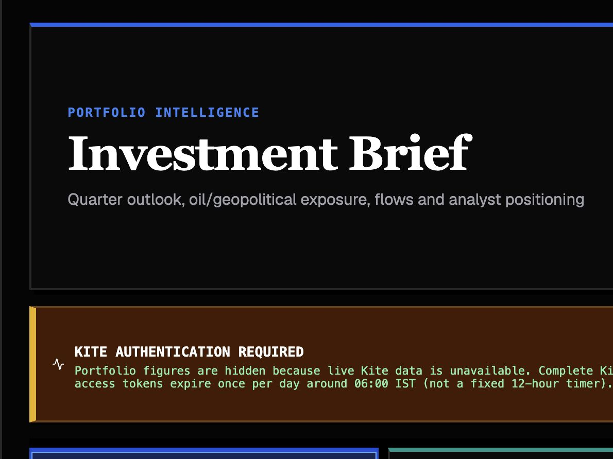
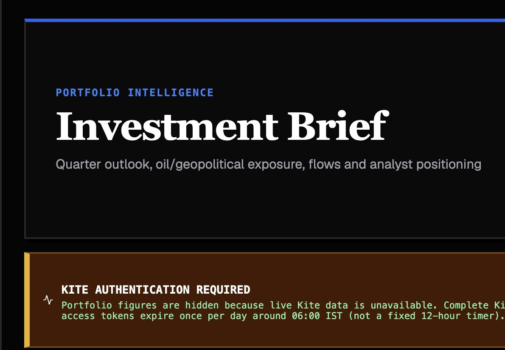
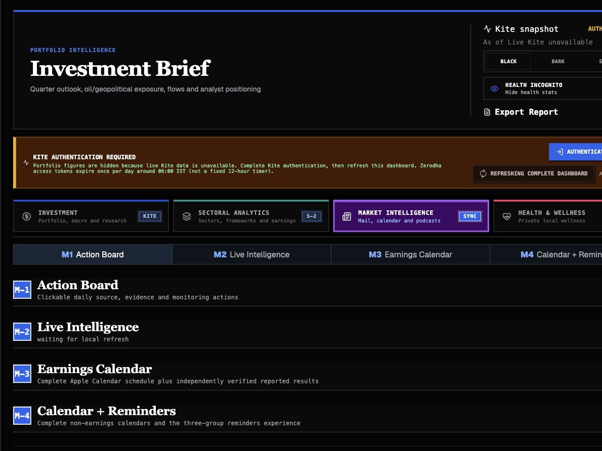
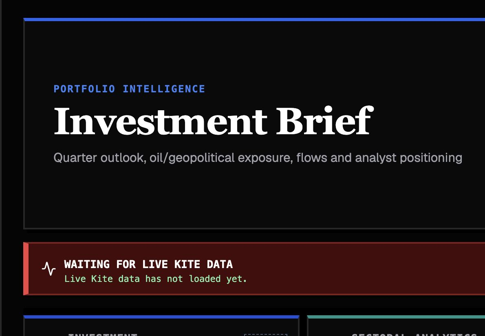
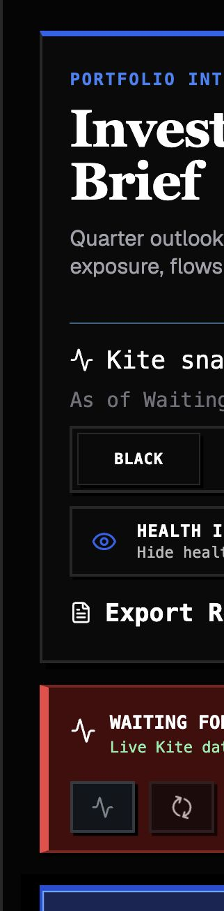
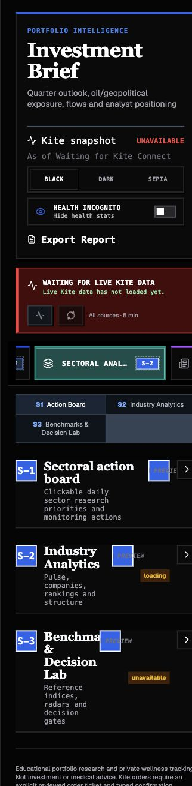
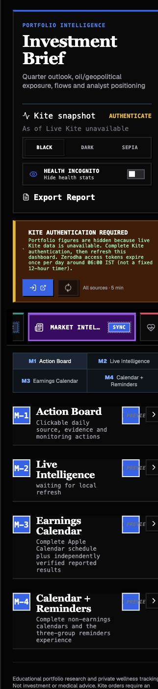
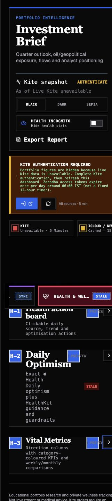

Investment Dashboard Comprehensive Audit
Scope: all reachable commits and refs; all four workspaces; all 14 numbered sections; discovered subpages, charts, APIs, source adapters, calculations, responsive layouts, alignment rules, startup/PDF contracts, accessibility and privacy boundaries. Baseline: Visual-Overhaul @ 0855923, plus two late-arriving uncommitted Sepia-contrast files recorded separately, Asia/Kolkata, 9 Aug 2026.
1. Executive diagnosis and permitted use
| Dimension | Verdict | Evidence | Permitted use |
|---|---|---|---|
| Product / UX | Degraded | Four workspaces render; responsive evidence shows mobile empty-space and density defects; browser console logs React #418 hydration failures. | Local inspection with caveats; not polished release proof. |
| Data freshness | Failed | Saved startup audit: Mail/Podcasts partial and Health stale. Live Health endpoint: complete through 2026-08-05, target 2026-08-08, newest ZIP invalid. | Historical/monitoring only; never “latest”. |
| Calculation integrity | Mixed | Portfolio fallback totals and several formulas tie mechanically; Health aggregation, sleep dating, return-period comparability and progress-to-target semantics require correction. | Spot calculations only after source-specific caveats. |
| Equity decision readiness | Not ready | No linked forecast-to-valuation/scenario layer, current verified price anchor, source-tied estimate bridge or common-equity downside output. | Monitoring/triage, not add/trim/exit/hedge decisions. |
| Release governance | Not canonical | Product branch and origin/main diverge; no CI, tags or signed releases; duplicate commit chains and contradictory committed audit artifacts. | Do not treat default branch as verified product release. |
2. Priority findings
| ID | Severity | Finding | Root cause / evidence | Impact | Required verification |
|---|---|---|---|---|---|
| F-01 | P1 | Health sum metrics can double count overlapping devices/apps. | scripts/import_apple_health.py:89-91,138-160: record identity includes sourceName, then sums all rows. | Steps, energy, distance and nutrition can be inflated. | Overlap fixtures; reconcile multiple dates to HealthKit Statistics. |
| F-02 | P1 | Sleep is assigned to start date. | import_apple_health.py:135-139,224-249 groups by startDate[:10]. | Cross-midnight sleep can shift to the prior operational day. | Cross-midnight fixtures and end/wake-day policy test. |
| F-03 | P1 | Earnings “verified” is structural, not IR/NSE verification. | app/earnings-verify.ts:41-99 accepts any HTTP URL plus filled KPIs. | Third-party/incorrect source can populate reported state. | Source-class allowlist, publication date and KPI-level tie-out. |
| F-04 | P1 | Delayed/incomplete yfinance universes can be labelled live. | sector-live-server.ts:289-316; one priced row is sufficient; prices are daily closes. | Breadth/rankings can look current while partial. | Coverage threshold, observation date, public_delayed/partial statuses. |
| F-05 | P1 | PDF freshness preflight is semantically incomplete. | app/report/page.tsx:165-200 checks sector HTTP success, not payload status; refresh path uses Mail force=0. | A “latest” PDF can contain mixed-freshness data. | HTTP-200/unavailable simulation must block and name source. |
| F-06 | P1 | Current dashboard is not current. | Health through 5 Aug vs target 8 Aug; newest Health ZIP invalid; saved startup audit has two failed rows; Kite unavailable in live UI. | Portfolio/health decisions may use stale or absent inputs. | Full startup audit with every required row passing semantic status. |
| F-07 | P1 | Private GET routes rely on network boundary, not app authorization. | flask_gateway.py:387-402 returns Health payload; api/axis-research/pdf/route.ts:46-70 serves matched research PDF. | Any unintended reachable client can access wellness/research content. | Unauthenticated GET denial tests; authenticated app flow. |
| F-08 | P1 | Unavailable S-3 investability inputs are plotted as zero. | SectorDecisionLab.tsx:164-168 converts null score/median to 0. | “Unavailable” appears as worst score, biasing radar and decision read. | Keep gaps null; visible unavailable annotation; chart regression test. |
| F-09 | P1 | Default/product branch drift. | Visual-Overhaul...origin/main = 2/2; 91-file product delta; merge-base 5eb666d. | Default-branch deploy omits current workspaces/APIs/visual changes. | Canonical merge and signed/tagged verified release. |
| F-10 | P1 | Credential-named cookie file remains tracked in history. | .firecrawl/fii-dii/nse-cookies.txt introduced by 0c71858; content deliberately not inspected. | Potential session compromise. | Out-of-band secret review; rotate/revoke; history remediation if needed. |
| F-11 | P2 | Risk-selector layout contract fails. | Complete suite 104/105; expected wrap/visible, CSS retains nowrap/auto/max-height. | Tabs can scroll/clip and break content-sized alignment. | Fix CSS and run full Node suite at all target widths. |
| F-12 | P2 | React hydration mismatch repeats on workspace navigation. | Live console recorded five minified React #418 errors. | SSR/client text mismatch and unstable first paint. | Development build trace; deterministic server/client dates and labels. |
| F-13 | P2 | Health overview violates non-scrolling compact-console intent. | Expanded H-3 measured 6,504px at mobile; collapsed mobile capture still shows a large blank gap before workspace content. | High scroll cost and broken compact layout. | 390×844 and landscape geometry assertions with all panels collapsed/open. |
| F-14 | P2 | Generated/vendor dump dominates history. | 2,015 tracked .firecrawl paths; 1,987 vendored node_modules; 89.4% of tracked tree. | Review noise, clone bloat, supply-chain ambiguity. | Dedicated cleanup and repository-size regression guard. |
| F-15 | P2 | Six exact duplicate commit pairs plus redundant stash. | Patch-identical parallel mobile chains and stash reconstruction. | Bisect/audit history misleading. | Document canonical chain; prune obsolete refs only with approval. |
| F-16 | P2 | Committed audit evidence is contradictory. | AUDIT-SUMMARY says production-ready/no warnings while its logs show source failures and build warnings; names absent deliverables. | Release evidence cannot be trusted. | Regenerate from commands and fail closed on source status. |
| F-17 | P3 | Two uncommitted Sepia-contrast changes appeared after the clean audit baseline. | app/visual-overhaul.css +101 lines and tests/rendered-html.test.mjs +6 assertions, both timestamped 07:53:51 IST. They were preserved and not attributed to a commit. | Final worktree is not clean and the audit baseline differs from handoff state. | Targeted lint and rendered-HTML tests pass; owner must review and intentionally commit or discard. |
3. All workspace / section / subsection coverage
| Workspace | Section | Subsections / controls | Sources | Live observation | Assessment |
|---|---|---|---|---|---|
| Investment | I-1 Action Board | To Do Today · Monitor · Completed Today | Kite, mail/research, local completion state | Rendered; Kite validation action present; no chart. | Usable with stale-source caveat; completion state is local. |
| Investment | I-2 Portfolio | Holdings, orders, positions, GTTs, TSLs, allocation, portfolio map | Kite holdings/positions/orders/GTT/margins/quotes/classifications | Kite unavailable; 0 charts rendered; explicit empty state. | Not assessable for live tie-out. |
| Investment | I-3 Risk | Risk composition, holding selector/radar, macro scenario lab | Kite holdings + hardcoded risk/scenario assumptions | 0 live charts due Kite; selector CSS regression confirmed. | Needs revision. |
| Investment | I-4 Axis picks | Call matrix, recommended stocks, recommendation radar | Axis PDFs/mail, yfinance/Kite preference, hardcoded overrides | 2 chart containers / 3 SVG surfaces rendered. | Mechanically rendered; source precedence and recency unsafe. |
| Sectoral | S-1 Action Board | Canonical three lanes | Sector/news/benchmark monitoring actions | Rendered; no chart. | Layout differs from strict equal-height request by content. |
| Sectoral | S-2 Industry Analytics | Sector pulse · Companies · Rankings · Life cycle · Market structure · MECE map; industry multi-select | 11 sector universes, yfinance, sector news, static frameworks | Live page reported 110 priced; data labelled live despite delayed/completeness semantics. | Data-state semantics need revision; isolation tests pass. |
| Sectoral | S-3 Benchmarks & Decision Lab | Benchmarks · Investability · PESTEL · Porter · Macro triggers; local sector selector | Yahoo delayed benchmarks + qualitative score models | Benchmark and radar SVGs render; one index unavailable. | Null-to-zero radar defect; delayed/live label mismatch. |
| Market Intelligence | M-1 Action Board | Canonical three lanes | Mail/calendar/reminder/podcast/earnings actions | Rendered; no sector-filter descendants. | Source actions depend on incomplete Apple sources. |
| Market Intelligence | M-2 Live Intelligence | Newsletters · Axis Research · Podcasts; sender/topic collapsibles | Exact mailboxes and Podcast descriptions/transcripts | Expanded; 0 charts; current local refresh not proven live. | Latest startup says partial; substantive-content tests pass. |
| Market Intelligence | M-3 Earnings Calendar | Month calendar, event selection, KPI details | Apple Calendar scheduling + local verified-event model | No sector dimming/disabled earnings controls. | Exclusive location is correct; verification semantics too weak. |
| Market Intelligence | M-4 Calendar + Reminders | Calendar; Reminders → Completed, Scheduled Important, Work / Job | Apple Calendar, Reminders | Expanded inner groups showed 0 entries in this run. | Structure correct; exact-list completeness unproven. |
| Health | H-1 Action Board | Canonical three lanes | Health trends/actions | Collapsed preview rendered. | Must remain incognito-safe; live toggle test passed. |
| Health | H-2 Daily Optimism | Health note, HealthKit guidance, secondary-source guardrails | Exact Health Daily note + Health snapshots | Stale; collapsed mobile card much taller than siblings. | Current data stale and alignment uneven. |
| Health | H-3 Vital Metrics | Weekly/MTD · favourable/context/unfavourable · Activity, Sleep, Heart, Respiratory, Mobility, Nutrition | Apple Health export + 7D/30D comparisons | Expanded mobile height 6,504px; explicit missing-date warning; Incognito body/ARIA scan hid values. | Data and compact-layout blockers. |
Fresh screenshot evidence








4. All discovered chart families
| Chart | Location | Data / formula | Runtime result | Integrity / accessibility finding |
|---|---|---|---|---|
| Nested allocation donut | I-2 | Market cap → sector → subsector → holding weights | Blocked by Kite unavailable. | Formula tests pass; live total not tied; SVG relies on dense in-chart text. |
| Risk composition bars | I-3 | Six 1–5 qualitative inputs; contribution score/6 | Blocked by Kite state. | Mechanically consistent but assumptions lack source registry. |
| Holding risk radar | I-3 | Selected holding risk axes vs portfolio | Blocked by live holdings. | Selector overflow test fails; SVG keyboard/summary support incomplete. |
| Axis recommendation radar | I-4 | Recommendation risk profiles | Rendered (part of 2 containers / 3 SVGs). | Recency-blind hardcoded call precedence can contaminate driver values. |
| Sector company scatter/bubble ×2 | S-2 Companies / Rankings | Price/return/ranking company universe | Not rendered in unfiltered audit state. | Requires selected-industry and complete delayed-data coverage; label collision logic exists. |
| Benchmark line chart | S-3 Benchmarks | Rebased delayed index histories | Rendered; 1 configured index unavailable. | Row says delayed while aggregate can say live; missing history/horizon comparability caveat. |
| Investability / PESTEL / Porter radar | S-3 | Qualitative 1–5 score families | Rendered. | Null values are coerced to zero; chart can misstate unavailable as worst. |
| Macro trigger bars | S-3 Macro triggers | Sector-local trigger scores | Component mapped. | Assumption-led; no source-to-score ledger or date owner. |
| Health spark filaments | H-3 tiles | Per-metric daily history | Rendered only when H-3 expanded; screenshot withheld to avoid private values. | History source is real per metric, but Health aggregation/window completeness is unreliable. |
| Print allocation SVG | /report | Same validated portfolio allocation | Source inspected; final export not run. | PDF contract can pass HTTP-200/unavailable sectors; must block semantically. |
5. Data pipeline, calculation and source tie-out ledger
| Pipeline | Required posture | Observed | Validation | Result / gap |
|---|---|---|---|---|
| Kite | Live holdings, positions, orders, GTTs, margins, quotes, P&L, classifications | Unavailable/authentication required in live UI | No trading action executed; no raw broker payload inspected. | Blocked; current portfolio not tied. |
| Mail — Newsletters | Exact iCloud/Newsletters, live, substantive-only | Saved aggregate content partial; current exact UI inspection not performed | Sanitizer and scoping tests pass. | Method protected; currentness unverified. |
| Mail — Axis Research | Exact mailbox, live, primary research provenance | Saved content partial; local archive present | PDF matching/scoping tests pass. | Current tie-out and access authorization unresolved. |
| Reminders | Every item in exact Job and Earnings lists | Runtime M-4 showed 0; broad reader marks source independently | Partition tests pass. | Exact-list existence/completeness not proven. |
| Calendar | All events through D-1; earnings only scheduling evidence | Saved/cached posture; M-4 0 in this run | Earnings exclusion and date tests pass. | Current read not independently verified. |
| Health note | Exact Health Daily note; no v2 | Presentation masked correctly in Incognito runtime test | Parser tests pass. | Current note source freshness not proven. |
| Apple Health export | Live through target 8 Aug; valid newest ZIP | Through 5 Aug; newest ZIP invalid; fallback retained | Archive tests pass; live endpoint exposed exact metadata. | 3-day gap plus aggregation defects. |
| Podcasts | Live eligible descriptions/transcripts; normalized-title dedupe | Saved Mail/Podcasts aggregate partial; permission state reported by pipeline audit | Sanitizer/dedupe/transcript-label tests pass. | Startup top-level status can mask Podcast failure. |
| Earnings | IR/NSE-first independent verification | Status can become verified from any HTTP URL + filled KPI | Structural tests pass. | Evidence standard insufficient. |
| Sector quotes | Complete universe with correct delayed/live label | 110 priced in runtime; any priced row yields live | Quote route test passes. | Coverage/date semantics unsafe. |
| Sector news | Current, source-specific, attempted-at visible | Live runtime list; retained failure lacks attemptedAt | Static inspection. | Refresh failure age ambiguous. |
| NSE benchmarks | Authoritative/delayed labels and complete configured set | Yahoo public delayed; NIFTY200 Alpha 30 unavailable | S-3 rendered. | Aggregate live label inconsistent. |
| Immediate semantic refresh for Kite, Mail, earnings, all sectors | Not exported; code checks HTTP success for sectors and force=0 content | Source inspection only. | Contract not met. |
Calculation spot checks
| Calculation | Result | Evidence / caveat |
|---|---|---|
| Fallback portfolio value | Verified mechanically | Holdings sum ₹14,439; invested ₹13,567.10; P&L ₹871.90; 6.426% rounds to 6.43%. |
| Fallback allocations | Verified mechanically | Market-cap and sector values each sum to ₹14,439 / 100%. |
| Live holding weights / P&L | Formula verified, live values not verified | Uses holding value divided by total; broker session unavailable. |
| FII 5-session net | −₹7,182.08cr | Recomputed from cited cached cash prints; snapshot is dated, not current. |
| DII 5-session net | +₹8,637.58cr | Recomputed; same date caveat. |
| Health 7D/30D averages | Mechanically valid, method unsafe | Averages available days with shifting n; comparison windows can be incomplete; range metrics use midpoint of extremes. |
| Axis implied upside | Formula verified | (target/current − 1) × 100; price and target provenance/corporate-action normalization missing. |
| “Progress to target” | Definition mismatch | Implementation uses CMP/target even when entry exists; not progress from entry to target. |
6. Layout, compactness, alignment and accessibility
| Surface | Width/height contract | Observed | Finding | Priority |
|---|---|---|---|---|
| Global masthead | Compact first-read layer | Header + Kite blocker consumes most mobile first viewport. | Move details behind compact status summary on small screens. | P2 |
| Workspace tabs | Four equal, readable controls | Mobile uses horizontal overflow; selected far-right workspace leaves partial adjacent cards. | Valid responsive pattern, but labels truncate and context is noisy. | P3 |
| Section tabs | Equal-width within workspace | M-1–M-4 and S-1–S-3 fit; narrow labels wrap inconsistently. | Use equal-height labels and consistent two-line cap. | P3 |
| Kanban lanes | Identical three-lane anatomy | Shared component is canonical; content-sized lanes do not guarantee equal heights. | User requested equal column boxes; implementation favors content sizing. | P2 |
| I-3 risk selector | Content-sized, wrap, overflow visible | Full suite fails: nowrap/auto/max-height remains. | Confirmed CSS regression. | P2 |
| I-3/I-4 chart columns | Equal paired boxes | Fixed/min-height mixtures and content-dependent legends create unequal heights. | Add shared grid row stretch and bounded internal scroll. | P2 |
| S-3 decision layout | Chart and explanation columns aligned | Chart fixed heights; side card count/content varies. | Equal-width can hold, equal-height is not guaranteed. | P2 |
| M-2 feeds | No artificial blank columns | Masonry/content-sized design avoids equal-height stretching. | Good for empty-space goal; exact visual state blocked by partial source. | Pass with caveat |
| M-4 groups | Calendar + Reminder groups compact/aligned | Runtime 0-entry state; source CSS includes varied max-heights. | Empty-state geometry needs screenshot regression. | P2 |
| Health H-1–H-3 | Non-scrolling three-panel console | Collapsed mobile has a large blank region; expanded H-3 measured 6,504px. | Confirmed contract violation. | P1/P2 |
| Charts accessibility | Keyboard/AT summaries, not color-only | Several Recharts SVGs lack explicit textual summaries/roles; tooltips are pointer-centric. | Screenshot review cannot prove WCAG; keyboard/AT audit still required. | P2 |
| Incognito | No values in visible/a11y metadata | Runtime toggle body + title/ARIA scan hid Health dates/values; one generic refresh title retained “HealthKit”. | Runtime check passes; static freshness pass-through remains a maintainability risk worth testing. | Caveat |
7. Complete reachable commit / object audit
All locally reachable heads, remote-tracking refs and stash objects were included. Remote facts use locally cached refs; no fetch was performed.
| Object | Date | Surface / purpose | Audit result |
|---|---|---|---|
| 3242281 | 13 Jul | Initial dashboard/report/Sites scaffold | Huge bootstrap; only rendered-HTML test. |
| f5b6f78 | 13 Jul | Dashboard QA/tests | Focused test commit; execution not recorded. |
| a5ea522 | 22 Jul | 111-file live-platform expansion | Over-broad; 2 test files for many security/data boundaries. |
| 40f703e | 22 Jul | Freshness hardening/workspace split | Improved tests; still large migration. |
| 5cc6adf / 5924c27 | 22 Jul | Kite reuse, donut, recommendations, UI/service | Exact duplicate patch pair; generated artifacts mixed in. |
| 6010f53 | 22 Jul | Stash untracked helper tree | Not independent product work. |
| fa94852 | 22 Jul | Empty stash index helper | Same tree as base. |
| efda76f | 22 Jul | Three-parent stash wrapper | Redundant reconstruction of committed work. |
| 66efa1c / 33ca078 | 22 Jul | Hybrid iPhone shell/HealthKit/pairing | Exact duplicate patch pair. |
| 913b1b0 / 54424bd | 22 Jul | Sector/mobile contract fix | Exact duplicate patch pair. |
| c5a08fa / 9678fc9 | 22 Jul | Swift shell portability | Exact duplicate; no test change. |
| 13411f5 / 033f950 | 22 Jul | Native install workflow | Exact duplicate; runner script but no recorded execution. |
| ba9b9c1 / efdba55 | 22 Jul | Native release/Health security | Exact duplicate; security-sensitive evidence weak. |
| d47b4cb | 29 Jul | 86-file console overhaul | Best documented major commit; explicit lint/build/targeted tests. |
| 0f29899 | 29 Jul | PR merge of d47b4cb | Topology marker; no new tree content. |
| 0c71858 | 29 Jul | 2,004-file Firecrawl dump | Repository hygiene/security failure; no tests. |
| 5eb666d | 29 Jul | Merge Firecrawl + dashboard overhaul | Shared base that carries bloat into every line. |
| 1d65e39 | 6 Aug | Phase 3, M-1–M-4, Health/freshness, audit artifacts | Strong test delta; audit artifacts contradict failed source logs. |
| 0855923 | 7 Aug | Visual overhaul, 46 files/+7,221 | Current product; two-word message; layout/data regressions present. |
| 15de454 | 7 Aug | README rewrite on default fork | Documentation-only divergence. |
| c1efbeb / c0a8549 | 7 Aug | GitHub MCP README smoke test | Patch-identical sibling commits; origin/main tip is not product release. |
Ref health
| Ref | State | Risk |
|---|---|---|
| Visual-Overhaul / origin/Visual-Overhaul | Exact at 0855923 | Current local product line; not default branch. |
| main | 1 ahead / 2 behind origin/main | Not canonical. |
| origin/main | Two commits diverged from product line | Default deploy omits Phase 3 + Visual Overhaul. |
| Two local topic branches | Upstream gone | Obsolete/duplicate checkout risk. |
| Tags / CI / signatures | None / none / unsigned | No immutable tested release anchor. |
| Working tree at handoff | 2 modified source/test files + audit artifacts | Late Sepia contrast enforcement is uncommitted; audit artifacts are new. |
8. Validation and reproduction evidence
| Check | Result | Interpretation |
|---|---|---|
| npm run lint | Pass | Static lint clean. |
| npm run build | Pass with warnings | Node DEP0205 deprecation; Vinext cannot classify some routes statically. |
| npm test | Pass | Package-selected 16 rendered + 28 targeted Node + 5 Health tests. |
| Complete tests/*.test.mjs | 104/105 | Risk panel content-sized/wrap contract fails. |
| Flask gateway via repository venv | 8/8 | System Python lacks Flask; correct venv passes. |
| RCA scanner | 317 files | 4 workspaces, 14 numbered sections after manual/static reconciliation, 14 API routes, 4 chart-bearing files. |
| Mac URL | HTTP 200 | Already-running service; no restart performed. |
| Tailscale URL | Not verified | Configured hostname did not resolve from audit environment. |
| Live console | 5 React #418 errors | Hydration mismatch on navigation/reload states. |
| Filter isolation | Pass | Market Intelligence had zero sector-filter/dimmed descendants and zero disabled earnings controls. |
| Incognito body/a11y scan | Pass in captured state | No Health dates/values/source metadata in visible body or title/ARIA attributes; screenshot kept collapsed. |
| Late Sepia patch | Lint + rendered HTML 16/16 | Uncommitted 107-line change validated after discovery; not part of the earlier full-suite baseline. |
9. Prioritized remediation plan
| Priority | Action | Owner surface | Acceptance test |
|---|---|---|---|
| 1 | Correct Health overlap dedupe, sleep-day attribution and complete-window comparisons. | Data / Health | Multi-device overlap and cross-midnight fixtures; HealthKit reconciliation; no live state with missing target coverage. |
| 2 | Require server authorization for Health snapshot and Axis PDF GETs. | Security / gateway | Unauthenticated direct GET denied; paired/session flow succeeds. |
| 3 | Replace structural earnings verification with IR/NSE-first source and KPI tie-out. | Data / earnings | Wrong-domain URL fails; each KPI carries primary source and publication date. |
| 4 | Correct sector delayed/live, constituent completeness, aggregation and period labels. | Market data | One missing symbol/sector yields partial; requested horizon without full history is non-comparable. |
| 5 | Enforce semantic PDF refresh and force current Mail/Axis before export. | Report pipeline | HTTP-200/unavailable source blocks export with exact failed source. |
| 6 | Fix risk-selector CSS, Health compact layout, mobile blank gap, equal-height paired panels and hydration mismatch. | UI / CSS / SSR | Full Node suite green; 1440 desktop, 390×844 portrait and landscape geometry assertions; zero console errors. |
| 7 | Establish canonical branch, merge divergence, remove generated/vendor tracking and investigate cookie history. | Git / release | One release branch; CI green; signed tag; secret scan clean; repository size guard. |
| 8 | Add source/as-of/owner registry for every qualitative score and Axis call; remove recency-blind override. | Research governance | Newer/older/closed-call conflict tests; every score traceable. |
| 9 | Add a linked valuation/scenario decision layer or state monitoring-only use prominently. | Equity model | Verified spot, estimate bridge, base/up/down, downside mechanism, evidence gaps and action rules—or explicit exclusion. |
10. Evidence limits, caveats and audit steps
- Step 1 — Repository baseline: clean worktree at 0855923; health: degraded due branch divergence. Two uncommitted Sepia files appeared later and are recorded separately.
- Step 2 — Full reachable history: 28 commit/merge/stash objects mapped; health: degraded due duplicates, bloat and missing release controls.
- Step 3 — Static workspace graph: all workspaces, numbered sections, subpages, controls and chart families mapped; health: complete inventory, material defects found.
- Step 4 — Desktop capture: four current workspace overviews captured and inspected; health: structurally present, source-blocked.
- Step 5 — Mobile capture: four current workspace overviews captured and inspected; health: needs revision for density/blank space.
- Step 6 — Interaction checks: collapsibles, S-2 isolation, M-3 enabled state and Incognito checked; health: isolation/incognito pass in observed state.
- Step 7 — Pipeline/model tie-out: sources, calculations and privacy routes inspected without raw private records; health: not decision-ready.
- Step 8 — Verification: lint, build, package tests, complete Node tests and Flask/Health tests run; health: one Node regression and runtime hydration errors.
- Step 9 — Delivery: this HTML report rendered locally and visually inspected; health: ready to share as an audit, not as proof the dashboard is current.
Supporting evidence: commit change map, workspace/static coverage, data-pipeline tie-out, and RCA inventory (JSON). Private payload bodies were excluded.